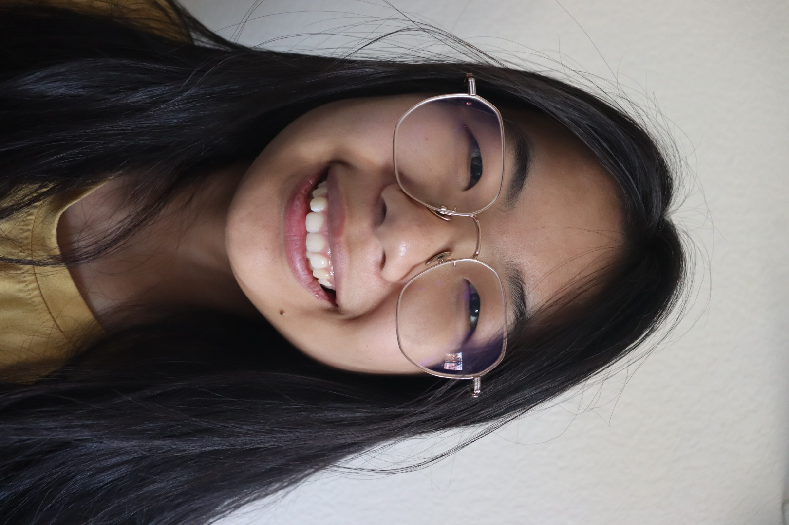
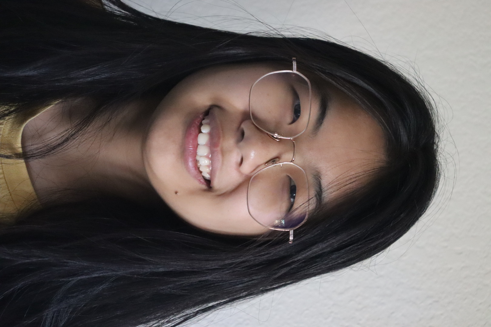
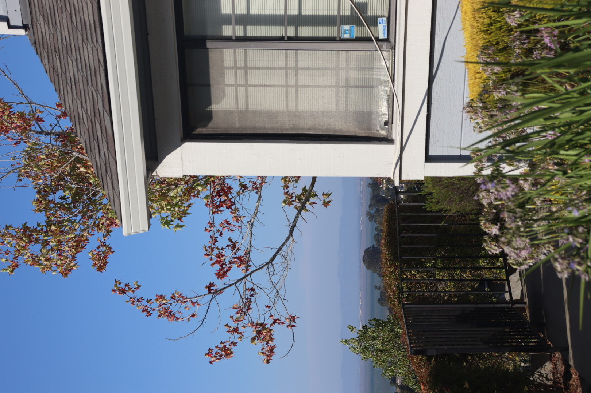
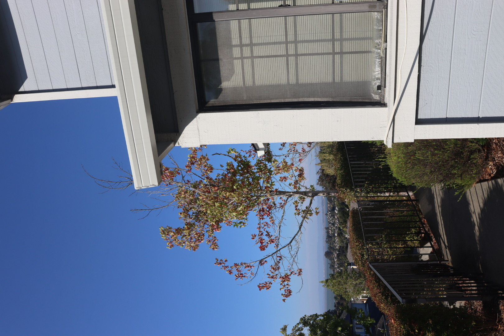
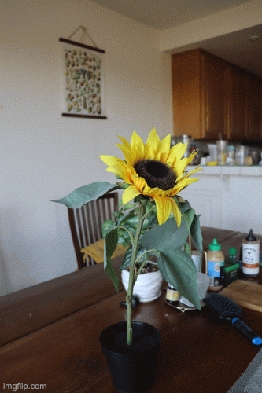

Project 0: Becoming Friends with Your Camera
Part 1: Selfie: The Wrong Way vs. The Right Way

closeup (f=18mm)

further away (f=55mm)
Part 2: Architectural Perspective Compression

far and zoomed in

without zoom
Part 3: The Dolly Zoom
